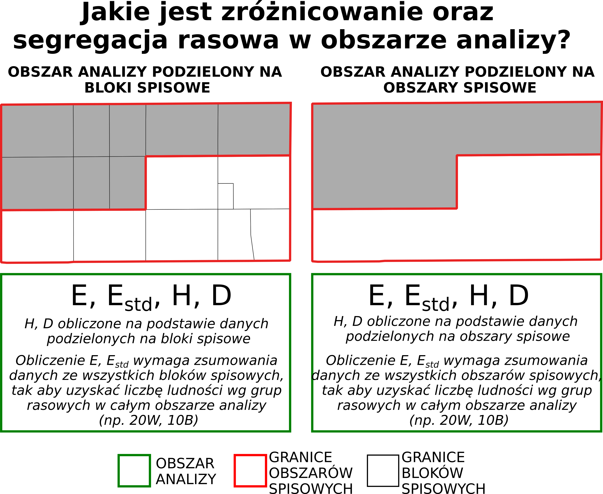

W nieniejszym ćwiczeniu wykorzystane zostaną tradycyjne miary segregacji oraz zróżnicowania rasowo-etnicznego do analizy rasowo-etnicznej struktury ludności w wybranym hrabstwie.
10.1 Wprowadzenie
Obliczenie miar segregacji rasowej wymaga podziału obszaru na mniejsze jednostki spisowe.

Rycina 1. Zróżnicowanie oraz segregacja rasowa w analizowanym obszarze (np. dla całego miasta)
10.2 Miary segregacji i zróżnicowania w R
Przed przystąpieniem do obliczeń należy wywołać wszystkie poniższe funkcje.
Pokaż kod funkcji
########## Funkcja obliczająca entropię #proportions - wektor zawierający odsetek poszczególnych ras w ogólnej liczbie ludności (wartości od 0 do 1)#base - podstawa logarytmu, domyslnie exp(1) oznacza obliczenie logarytmu naturalnego entropy_fnc =function(proportions, base =exp(1)) { entr =-sum(ifelse(proportions >0, proportions *log(proportions, base = base), 0))return(entr)}########## Funkcja obliczająca standaryzowaną entropięentropy_std_fnc =function(proportions, base =exp(1)) { entr =-sum(ifelse(proportions >0, proportions *log(proportions, base = base), 0)) #obliczenie entropii entr_std = entr/log(length(proportions), base = base) #standaryzacjareturn(entr_std)}########## Funkcja obliczająca wskaźnik teorii informacji H hindex <-function(races) {#races_all to liczba osob w calym obszarze w podziale na grupy rasowo-etniczneraces_all =apply(races, 2, sum, na.rm=TRUE)#liczba osob w calym obszarzepop =sum(races_all, na.rm=TRUE)#liczba osob w kazdej jednostce spisowejpop_i =apply(races, 1, sum, na.rm=TRUE)#odsetek osob w danej grupy rasowo-etnicznej w kazdej jednostce spisowejproportions = races/pop_i#odsetek osob w danej grupy rasowo-etnicznej w calym obszarzeproportions_all = races_all/sum(races_all, na.rm =TRUE)#entropia dla kazdej jednostki spisowejent_i =apply(proportions, 1, entropy_fnc)#entropia dla calego obszaruent =entropy_fnc(proportions_all) #obliczenie Hhind =sum(pop_i*(ent-ent_i)/(ent*pop), na.rm=TRUE)return(hind)}########## Funkcja obliczająca wskaźnik niepodobieństwa D# a - liczba osob grupy 1 w jednostce spisowej, b - liczba osob gruy 2 w jednostce spisowejd_ind =function(a, b) { d =0.5*sum(abs(a/sum(a, na.rm=TRUE) - b/sum(b, na.rm=TRUE)))return(d)}
10.3 Przykład: Zróżnicowanie oraz segregacja rasowa w District of Columbia w 2020 roku
W poniższym przykładzie zostaną obliczone miary segregacji oraz zróżnicowania rasowo-etnicznego używając danych na poziomie bloków spisowych z 2020 roku dla obszaru District of Columbia.
Tabela przedstawia dane dotyczące struktury rasowo-etnicznej dla bloków spisowych dla 6 kategorii rasowo-etnicznych (WHITE, BLACK, ASIAN, HISPANIC, AM, OTHER).
dat <-read.csv("data/data_attr/dc_blocks_2020_attr.csv")
10.3.1 Rasowo-etniczna struktura ludności w analizowanym obszarze
# Wty miejscu podajemy nazwy kolumn dla poszczegolnych grup rasowo-etnicznych zgodne z wczytanym wczesniej plikiem csvlist_race <-c("WHITE", "BLACK", "ASIAN", "HISPANIC", "AM", "OTHER")
Liczba ludności w podziale na grupy rasowo-etniczne w analizowanym obszarze w 2020 roku.
WHITE BLACK ASIAN HISPANIC AM OTHER
27.37 65.12 1.77 5.39 0.21 0.14
10.3.2 Analiza zróżnicowania oraz segregacji rasowo-etnicznej na podstawie danych z bloków spisowych
Obliczenie entropii na podstawie bloków spisowych
Entropia jest miarą zróżnicowania całego obszaru (np. hrabstwa). Musimy zatem najpierw zsumować dane dotyczące struktury rasowo-etnicznej całego obszaru, a następnie obliczyć odsetek poszczególnych ras w ogólnej liczbie ludności.
races_all <-apply(dat[,list_race], 2, sum, na.rm =TRUE) #races_all zawiera liczbę osob wg ras dla całego obszaruperc <- races_all/sum(races_all) #Odseted osob poszczegolnych ras dla calego obszaruperc <- perc[list_race] #wybierz tylko wartosci dla rasperc
WHITE BLACK ASIAN HISPANIC AM OTHER
0.273737024 0.651199539 0.017686604 0.053896853 0.002062943 0.001417037
Wektor perc zawiera dane, które należy podstawić do obliczenia entropii.
ent <-entropy_fnc(perc)ent
[1] 0.8848065
Obliczenie entropii standaryzowanej na podstawie bloków spisowych
ent_std <-entropy_std_fnc(perc)ent_std
[1] 0.4938199
Obliczanie wskaźnika teorii informacji H na podstawie bloków spisowych
races = dat[, list_race]h =hindex(races)h
[1] 0.5205281
Obliczenie wskaźnika niepodobieństwa D na podstawie bloków spisowych
d_wb <-d_ind(dat$WHITE, dat$BLACK)
d_wa <-d_ind(dat$WHITE, dat$ASIAN)
d_wl <-d_ind(dat$WHITE, dat$HISPANIC)
d_bl <-d_ind(dat$BLACK, dat$HISPANIC)
10.3.3 Podsumowanie miar segregacji na poziomie bloków spisowych
out <-round(c(entropia = ent, entropia_std = ent_std, H = h, Dwb = d_wb, Dwa = d_wa, Dwl = d_wl, Dbl = d_bl), 3)out
entropia entropia_std H Dwb Dwa Dwl
0.885 0.494 0.521 0.820 0.424 0.599
Dbl
0.706
Wykorzystując powyższy kod proszę obliczyć entropię, entropię standaryzowaną, wskaźnik teorii informacji H oraz wskaźnik niepodobieństwa D wykorzystując dane zaagregowane do obszarów spisowych (census tract).